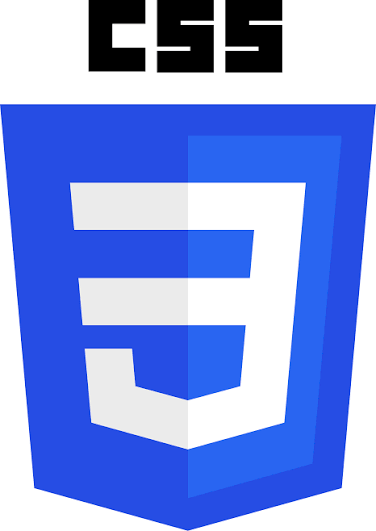

Contacts
- Num : +33 06 12 34 56 78
- Adresse : 12 rue des Lilas, 06400 Cannes
- E-mail : wassim.zitouni.cv@gmail.com
Études et formations
BTS Services Informatiques aux Organisations
- Établissement : Lycée Carnot, Cannes
- 2025 – 2026
- Diplôme : BTS SIO
Baccalauréat général
- Établissement : Lycée Jules Ferry, Cannes
- 2021 – 2024
- Diplôme : Baccalauréat général
Mes compétences :
- HTML
-

CSS - Python
- Bash
- Linux
-
 GitHub
GitHub